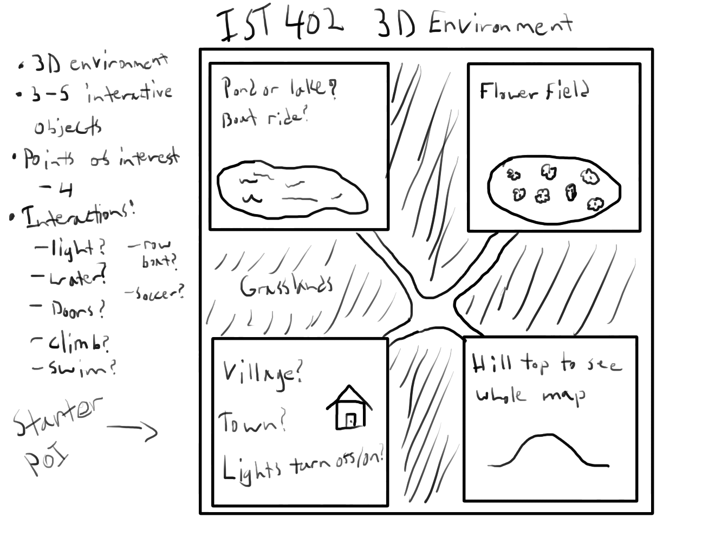
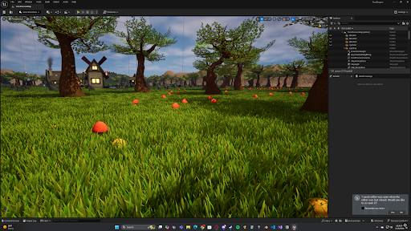
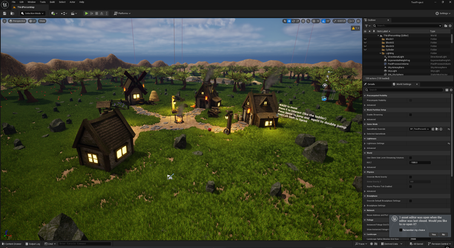
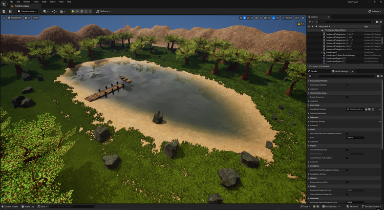
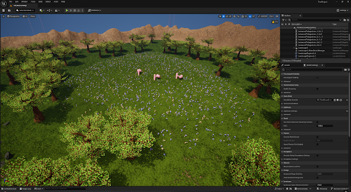
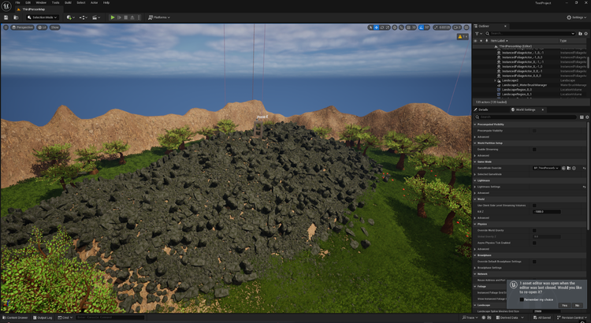

Unreal Engine 5 Environmental Designer and Interaction Programmer for IST 402 Final
Information Sciences and Technology 402, Penn State University
Project Overview
For this project I was tasked with creating a 3D interactive environment with any tools I wanted. I decided I would create the interactive world in Unreal Engine 5 to familiarize myself with the engine. The environment is depicted from a third-person camera perspective with basic movements like jump, double-jump, sprint, and an interact button.
My Role on The Team and Tools Used
My key roles were to design an environment the user could navigate and program some level of interactivity into the environment. The tools used for this project were Unreal Engine 5 to make the environment, GitHub to log updates, and Google Docs to document changes in the environment.
Design Challenges
My primary design challenge was making an interactive 3D environment that would incentivize users to explore. I also need to give them tools to be able to navigate the environment at their leisure. The goal of the project was rather vague but the only requirements were that it be a 3D environment with about 3 interactive objects. To tackle this challenge, I decided to create a relatively small environment where the user could see most of the environment from anywhere they stood. I settled on having 4 points of interest in the environment so that there was reason for the user to explore as well.
Production Process and Work Samples
Shown below in figure 1 is an early mockup drawing of the environment I was envisioning. At the time, I was incredibly unsure of the kind of environment I would make and what I could add for interactivity. This unease is mostly because the requirements for the assignment were rather vague. I was not fully confident that my ideas would meet the requirements for the assignment. I wanted 4 points of interest with each having their own unique interaction for the user to find. The basic points of interest I came up with were the village, the hill top, a flower field, and a pond. The assets used in this assignment come from the "Advanced Villager Pack" on the website called fab. The professor allowed me to use free assets due to the fact that I was the only solo project in the whole class. This was due to one group mate dropping out early in production and another who did no work and so I asked to be a solo worker.

To continue, I also watned to add some unique navigation for the user that I thought would be clever additions such as sprinting and double-jumping. The intent was to let the user explore the environment in their own way and try to get to places you wouldn't be able to without those movement options. Below in figure 2 is an early photo of when I had familiarized myself with the foliage and landscaping tools in Unreal Engine 5 for the project. In this photo I had already placed the basic houses and campfire for the village and added some forestry, grass, and mushrooms. I spent a decent amount of time trying to find good combinations of grass types to make it look like grass you would see outdoors. This is thanks to the free assets that I was able to make a blend of the different grass types to make something I thought looked decent. At around this time I was also wondering if I should place some patches of flowers to lighten up the environment, however, I settled on making it isolated to one map area later down the line. During this stage of development there wasn't actually much collision so you coudl run through trees and the village houses. This is where I discovered the very handy tools Unreal Engine 5 has to establish automated collisions for the sake of convenience.

Final Design of IST 402 Project
Key Notes:
- For the final design I created four different points of interest in the environment that all had their own interactive objects
- For the village it has a red ball that the user can kick around
- For the rock mound there is a door that can be opened and closed
- For the flower field there are spinning pistons that can knock the player around
- For the lake there is a boat that the user can move around
- The boat was intended to be able to pilot and steer but I ran out of time to figure out how to program that in blueprint
- The player can use walk, sprint, jump, double-jump, and an interact key to navigate the environment at their leisure
- There is a dirt wall that blocks the player off from leaving the environment
- It isn’t an invisible wall because I didn’t know how to do that at the time
- All objects had collision by this point
- One major flaw in the lake area is that the user is not buoyant
- This aspect took an especially long time for me to work on and I still never really found a solution
- Getting the boat to stay above the water line was an especially difficult task as well
- The unfortunate result of this is the player just sinks to the bottom of the water
- For the final build I also added some text around the environment to help the users understand the controls as well as some objects to test out said controls
- I really wanted to add the ability to turn lights on and off in the village and to have the fish on the campfire rotate but with the way the blueprints for those objects were configured I wasn’t sure how to go about doing it
- I saw there were nodes that controlled the lighting and I tried having it so when the user clicks e the lights turn off but nothing would happen after several attempts and changes to the blueprint




What Worked? What Did Not Work? What Can Be Improved?
What Worked:
- Choosing Unreal Engine 5 to create the 3D environment was a very decent choice
- Making a quick 3D environment with foliage and interactive objects was quite quick and convenient
- Creating points of interest ideas for the environment helped make a cohesive sort of place for the user to navigate
- Regularly documenting the progress for class helped map out next steps on what to add
- Being able to use premade free assets helped cut down on time immensely
- Unreal Engine 5 has very convenient tools to enable physics and collisions
- Putting up context text around the map helps users understand what they are able to do
- I would spawn them in front of the text so it was impossible to miss
What Did Not Work:
- Had to crunch time this project due to working on it solo and due to it being the end of semester so there were many other projects I had to work through
- Time was wasted in the beginning as I tried to communicate with teammates initially on my thoughts of what to do with the project and then being told I would be working alone
- The environment is incredibly boring
- The interactivity in it is just there to meet the requirements for the project and the instructions were vague and simple
- There really isn’t anything interesting to see in the environment
- Once you have interacted with the interactable objects in the environment what little charm there is is gone immediately
- The frame rate is horrendous
- I could not for the life of me figure out how to better optimize the build to have the frame rate not consistently hit 40 frames per second
- The only setting I thought could help was unloading textures and objects if the user isn’t looking at them but that did not do much
- Documentation kind of became redundant as the professor had us submit reports often yet there was not much to report in terms of progress most of the time
- The player model is just the default Unreal Engine 5 model
- There are no paths that guide the user to other parts of the environment
- Player cannot float in water
- Some object collisions are finnicky when colliding with them (mostly trying to walk over them)
What Would I Improve:
- I would first and foremost try to find out how to add invisible walls and remove the ugly dirt walls at the borders of the map
- I would try and make the boat in the lake able to be driven by the user
- I would add an actual player model instead of the normal Unreal Engine 5 model
- I would go back and try to figure out how to make the village more interactable
- Take the door off of the rock mound and replace that interactable with something actually interesting
- Maybe make a puzzle that is solved only by navigating to the four points of interest to gather clues
- Make a menu screen
- Add a day/night cycle
User Feedback
- The professor gave the project a 100% and did not provide feedback however I did show some friends the project and they had similar thoughts to my improvement suggestions
- Movement is clunky
- Add more interactable objects
- The boat barely floats
- What is the purpose of navigating the environment? What is the goal?
- Why is there a door at the top of a rock mound?
- The spinning pistons are fun
- The frame rate is hard to ignore
- There is dead space in one corner of the map that has nothing to do
- There is not a player model animation to show that you interacted with the object